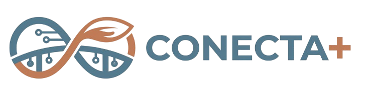
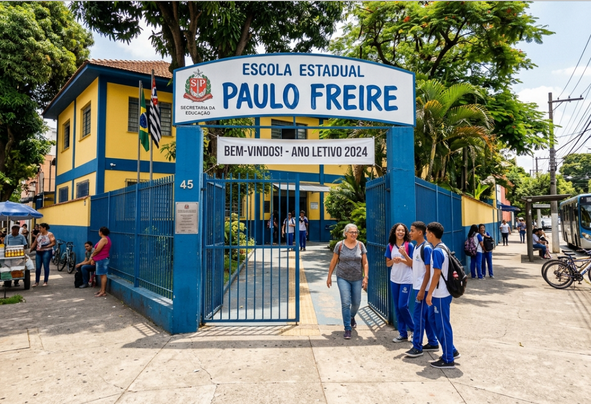
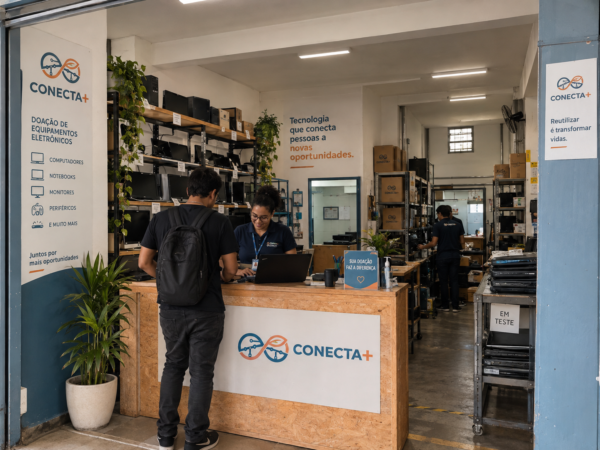

Aberto para Doações
Aberto para Doações
Polo 01 - Salvador Tech
Praça da Juventude📍 Rua das Palmeiras, 140 - Bairro Novo
🕒 Seg a Sex: 08h às 18h | Sáb: 09h às 13h

Recebemos computadores, monitores e peças com segurança e transparência. Encontre o polo mais conveniente para você ou agende uma coleta para grandes lotes.
Todos os pontos contam com equipe voluntária treinada para emitir comprovante de doação e garantir a triagem segura dos componentes.
Aberto para Doações
📍 Rua das Palmeiras, 140 - Bairro Novo
🕒 Seg a Sex: 08h às 18h | Sáb: 09h às 13h

Aberto para Doações📍 Av. dos Bandeirantes, 850 - Vila Esperança
🕒 Seg a Sex: 08h às 17h

Ponto Central📍 Rua da Cidadania, 150 - Centro
🕒 Seg a Sex: 08h às 19h | Sáb: 08h às 14h
Passe o mouse sobre os pins para inspecionar os detalhes de cada ponto no mapa.
Rua das Palmeiras, 140
● Aberto AgoraAv. dos Bandeirantes, 850
● Aberto AgoraRua da Cidadania, 150
● Aberto Agora